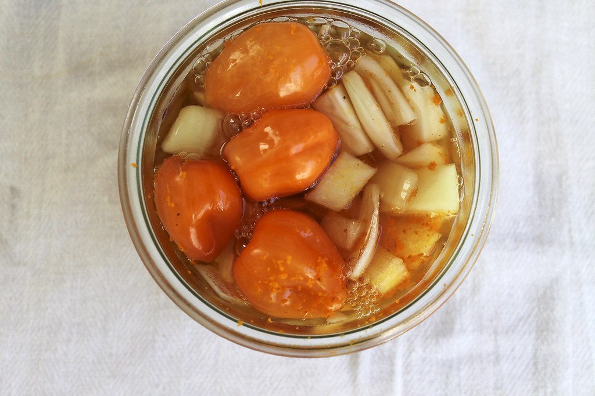

Home
Fire Cider

Description
This is my favorite herbal vinegar.
It's an amazingly effective remedy for
staying healthy in the winter and keeping
colds and flu at bay. It's actually delicious!
Use it as a salad dressing, but be sure to save
some for medicinal purposes.
Ingredients
- 1 medium onion, chopped
- 4-5 cloves garlic, coarsely chopped
- 3-4 tablespoons freshly grated gingerroot
- 3-4 tablespoons freshly grated horseradish root
- Apple cider vinegar (preferably unpasteurized)
- Honey
- Cayenne powder
Steps
- Combine the onion, garlic, ginger, and horseradish
in a widemouthed glass quart jar and add enough warmed
apple cider vinegar to cover them. (Warming the vinegar allows
it to more actively draw the properties out of the herbs.)
-
Place in a warm spot (near a sunny window is fine) and let sit
for 3 to 4 weeks.
- Strain, then discard the spent herbs. Now the
fun part: Add honey and cayenne to taste. The finished product should
taste lively, hot, pungent, and sweet.